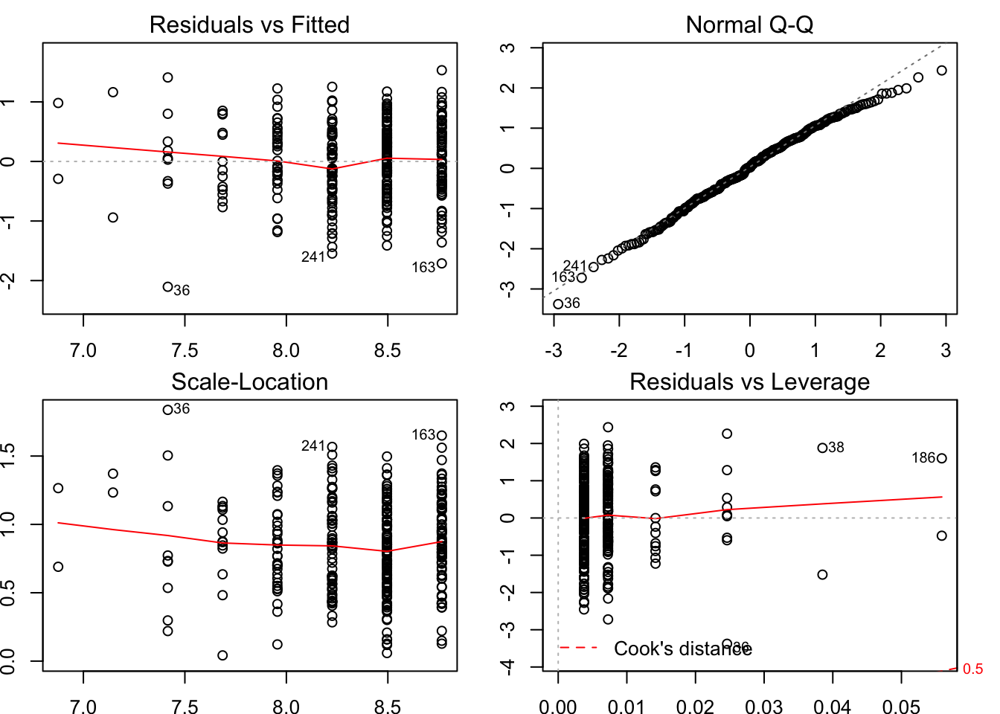

Chapter 2 Linear Regression
Following packages and functions are used in this project.
## basic packages
library(knitr)
library(kableExtra)
library(tidyverse)
library(conflicted)
library(magrittr)
library(broom)
## paticular packages for this project
library(lmtest)
library(corrr)
library(tseries)
library(corrplot)
source("../src/funcs.R")
source("../src/tests.R")The data set is defined as follows based on file recs.csv:
set.seed(6)
dat <-
read_csv("../data/recs.csv") %>%
dplyr::slice(sample(nrow(.), 300)) %>%
mutate(y = log(KWH / NHSLDMEM)) %>%
mutate(x8 = TOTROOMS + NCOMBATH + NHAFBATH) %>%
dplyr::select(y, x2 = NHSLDMEM, x3 = EDUCATION, x4 = MONEYPY, x5 = HHSEX,
x6 = HHAGE, x7 = ATHOME, x8) %>%
mutate_at(seq(2, 8), as.integer) %>% # make continuous variables discrete
mutate(x5 = - x5 + 2)Different variables are summarized in the following table. y, the logarithm of averaged electricity consumption, is the variable that we are interested in. Specifically, The electricity consumption refers to the electricity usage of the house/studio where the respondent lives in 2015, measured in kilowatthours. The quantity is average by the number of household members in the house/studio. That way, it roughly represent the level of electricity consumption of the respondent. Other variables are discussion in the following table.
| Sym | Abbr | Definition |
|---|---|---|
| z | KWH | electricity consumption |
| y | LKWH.pers | logarithm of KWH/NHSLDMEM |
| x2 | NHSLDMEM | number of household members |
| x3 | EDUCATION | highest education completed |
| x4 | MONEYPY | annual gross household income last year |
| x5 | HHSEX | gender |
| x6 | HHAGE | age |
| x7 | ATHOME | number of weekdays someone is at home |
| x8 | TOTROOMS + | number of rooms (including bathrooms) |
Note that x8 is a variable indicating the number of rooms of the house/studio of the respondent. It equals the summation of TOTROOMS, NCOMBATH and NHAFBATH in the original data set. x8 is not included in the initial analysis (sections 1 to 7).
x3, the education level of the respondent, is considered as a continuous variable in this project for simplicity. The detailed definition of different levels is shown in the following table.
| Level | Definition |
|---|---|
| 1 | Less than high school diploma or GED |
| 2 | High school diploma or GED |
| 3 | Some college or Associate’s degree |
| 4 | Bachelor’s degree (for example: BA, BS) |
| 5 | Master’s, Professional, or Doctorate degree |
The first 5 rows of the data set used can be visualized:
| y | x2 | x3 | x4 | x5 | x6 | x7 | x8 |
|---|---|---|---|---|---|---|---|
| 7.540 | 5 | 3 | 8 | 1 | 39 | 5 | 15 |
| 8.193 | 1 | 2 | 2 | 0 | 85 | 5 | 14 |
| 8.678 | 3 | 1 | 1 | 0 | 71 | 5 | 8 |
| 7.846 | 4 | 3 | 5 | 1 | 39 | 5 | 8 |
| 9.755 | 1 | 3 | 3 | 0 | 57 | 0 | 10 |
In this project, we want to develop a model associating the continuous variable, average electricity consumption, with other variables. We will start by visualizing correlations between variables. In particular, the two variables x2 and x6, which highly correlate with y will be explored. The model regressing y on x2 will be discussed in section 2. Four assumptions will be made, three of which will be tested in section 3-5 by Jarque-Bera test (normality), White’s test (homoskedasticity) and RESET test (functional form) respectively. According the test results and discussion in section 6, data point 36 is excluded. Then, in section 7, more regressors are introduced and three new models are established. The detail regarding how regressors interact with each other, namely causality, is discussed in section 8. Based on the understanding of the underlying mechanism, a nonlinear term and x8 are included as new regressors. Two new models are estimated, based on the only model passing all tests in section 7. Finally, the model called mods[[7]] is chosen as the final for presentation and it is interpreted in section 10.
2.1 1. Data Visualization
It can be seen that y is highly correlated to x2 and x6 according to the following table.
| x | y | r |
|---|---|---|
| x2 | y | -0.51098 |
| x3 | y | 0.03410 |
| x4 | y | 0.04098 |
| x5 | y | -0.04260 |
| x6 | y | 0.35346 |
| x7 | y | 0.03966 |
| x8 | y | 0.21329 |
It can be seen from the following covariance matrix that y is highly correlated to x2, x6 and x8. Besides, x3-x4, x2-x6, x4-x8 are high correlated, which will be discussed in section 9.

For each level of x2 a box indicating three quantiles (25%, 50%, 75%) of y is given. It shows that there is a tendency for y to decrease with x2 by looking at the median. The sizes of different boxes seem to vary with different values of x2. Besides, there are many observations when x2 is small. But it is assumed for now that the conditional variance is constant, which will be tested section 4. Three data points with extreme values 36, 241 and 163 is discussed in sections 3 and 5.

The box plot of y by x6 is given. It can be seen that the tendency is not strictly linear and the condition variance is not stable. So we will regress y on x2 first and use x6 as the second regressor in section 6.

2.2 2. Regress y on x2, Assumptions and Orthogonalization
mods[[1]] is obtained by regressing y on x2.
#> lm(formula = y ~ x2, data = dat)| term | estimate | std.error | statistic | p.value |
|---|---|---|---|---|
| (Intercept) | 9.036 | 0.07526 | 120.06 | 2.214e-254 |
| x2 | -0.270 | 0.02631 | -10.26 | 2.352e-21 |
| r.squared | adj.r.squared | sigma | statistic | p.value | df | logLik | AIC | BIC | deviance | df.residual |
|---|---|---|---|---|---|---|---|---|---|---|
| 0.2611 | 0.2586 | 0.6309 | 105.3 | 2.352e-21 | 2 | -286.5 | 579 | 590.1 | 118.6 | 298 |
By orthogonalizing x2 with respect to constant 1. the following reparameterized model can be obtained.
mods[[2]] <-
dat %>%
mutate(x1 = 1, x21 = x2 - mean(.$x2)) %>%
dplyr::select(y, x1, x21) %>%
{lm(y ~ x1 + x21, data = .)}#> lm(formula = y ~ x1 + x21, data = .)| term | estimate | std.error | statistic | p.value |
|---|---|---|---|---|
| (Intercept) | 8.36 | 0.03642 | 229.52 | 0.000e+00 |
| x21 | -0.27 | 0.02631 | -10.26 | 2.352e-21 |
| r.squared | adj.r.squared | sigma | statistic | p.value | df | logLik | AIC | BIC | deviance | df.residual |
|---|---|---|---|---|---|---|---|---|---|---|
| 0.2611 | 0.2586 | 0.6309 | 105.3 | 2.352e-21 | 2 | -286.5 | 579 | 590.1 | 118.6 | 298 |
The estimated regression coefficient for x2 in mods[[1]] equals that for x21 in mods[[2]]. That is, slopes in these two models are the same. The standard error of the intercept is reduced by 51.60 %.
2.3 3. Normality and Jarque-Bera Test of mods[[1]]
The following four plots can be used to check the plausibility of normality assumptions:
- The upper left plot shows residuals against fitted values of
mods[[1]]. It is hard to trust indication the flat trending line because there are few data points with low fitted values. The variance seems to be stable when fitted values are high. The assumption of homoskedasticity is tested formally in section 4. - Data points
36,241and163are mentioned in all but the lower right plots. They are examined in section 6. - The assumption of conditional normality looks reasonable according to the upper right Q-Q plot. A formal Jarque-Bera test is performed later this section to examine this assumption in a quantitative manner.

The assumption of conditional normality is justified by JB test.
| whi | stat | df1 | df2 | p_value | prob | if_reject |
|---|---|---|---|---|---|---|
2.4 4. Homoskedasticity and White’s Test of mods[[1]]
mods[[1]] cannot pass the White’s test, which means the variances of residuals do vary with different values of y.
| whi | stat | df1 | df2 | p_value | prob | if_reject |
|---|---|---|---|---|---|---|
| White | 6.028 | 2 | 298 | 0.04909 | 0.05 | TRUE |
2.5 5. Functional Form and RESET Test of mods[[1]]
mods[[1]] can pass RESET test.
#> Registered S3 methods overwritten by 'lme4':
#> method from
#> cooks.distance.influence.merMod car
#> influence.merMod car
#> dfbeta.influence.merMod car
#> dfbetas.influence.merMod car| whi | stat | df1 | df2 | p_value | prob | if_reject |
|---|---|---|---|---|---|---|
| RESET | 1.128 | 1 | 299 | 0.2883 | 0.05 | FALSE |
2.6 6. Regress y on x2 with 36 Data Point Excluded
36, 241 and 163 data points are mentioned in three plots regrading the analysis of residuals of mods[[1]] in section 3. According to the scatter plot in section 1, their values of y are too small compared to those with same values of x2. They seems to be well defined.
| index | y | x2 |
|---|---|---|
| 36 | 5.312 | 6 |
| 163 | 7.054 | 1 |
| 241 | 6.680 | 3 |
However, with just 8 other points when x2 equals 6, data point 36 will have a huge impact on the model, so it is excluded in the following model mods[[2]]. That is, a new model is estimated with the same formula as mods[[1]] but the data set excluding data point 36.
#> lm(formula = y ~ x2, data = .)| term | estimate | std.error | statistic | p.value |
|---|---|---|---|---|
| (Intercept) | 9.0101 | 0.07431 | 121.254 | 5.324e-255 |
| x2 | -0.2569 | 0.02612 | -9.832 | 6.208e-20 |
| r.squared | adj.r.squared | sigma | statistic | p.value | df | logLik | AIC | BIC | deviance | df.residual |
|---|---|---|---|---|---|---|---|---|---|---|
| 0.2456 | 0.243 | 0.6197 | 96.67 | 6.208e-20 | 2 | -280.2 | 566.4 | 577.5 | 114.1 | 297 |
Compared with mods[[1]], mods[[2]] has more accurate estimation. Besides, mods[[2]] passes all of the hypothesis tests. So data point 36 is exluded in the following models, and the corresponding new data set dat_2 is used.
| whi | stat | df1 | df2 | p_value | prob | if_reject |
|---|---|---|---|---|---|---|
| White | 1.686 | 2 | 297 | 0.4304 | 0.05 | FALSE |
| RESET | 1.986 | 1 | 298 | 0.1588 | 0.05 | FALSE |
2.7 7. Models with More Regressors
2.7.1 7-1. Benchmark Model
mods[[3]] with x2 and x6 being regressors is a good model already and pass every test. It is chosen as the benchmark model after the discussion in subsection 7-4.
#> lm(formula = y ~ x2 + x6, data = dat_2)| term | estimate | std.error | statistic | p.value |
|---|---|---|---|---|
| (Intercept) | 8.522218 | 0.167008 | 51.029 | 1.015e-148 |
| x2 | -0.220207 | 0.028079 | -7.842 | 8.080e-14 |
| x6 | 0.007576 | 0.002331 | 3.249 | 1.290e-03 |
| r.squared | adj.r.squared | sigma | statistic | p.value | df | logLik | AIC | BIC | deviance | df.residual |
|---|---|---|---|---|---|---|---|---|---|---|
| 0.2715 | 0.2666 | 0.61 | 55.17 | 4.32e-21 | 3 | -275 | 557.9 | 572.7 | 110.1 | 296 |
results_test <- mods[[3]] %>% test_jb(dat_2)
results_test %<>%
bind_rows(test_white(mods[[3]], dat_2, resi2 ~ x2 + x6 + I(x2^2) + I(x6^2),
3)) %>%
bind_rows(test_white(mods[[3]], dat_2, resi2 ~ x2 + x6 + I(x2^2) + I(x6^2) +
I(x2 * x6), 6)) %>%
bind_rows(test_reset(mods[[3]], dat_2))
results_test %>% tab_ti(F)| whi | stat | df1 | df2 | p_value | prob | if_reject |
|---|---|---|---|---|---|---|
| White | 1.32474 | 3 | 296 | 0.7233 | 0.05 | FALSE |
| White | 3.24389 | 6 | 293 | 0.7777 | 0.05 | FALSE |
| RESET | 0.04314 | 1 | 298 | 0.8355 | 0.05 | FALSE |
2.7.2 7-2. Model with All Regressors
To construct mods[[4]], all of the variables (excluding x8) are included. mods[[4]] can pass Jarque-Bera test and two White’s tests, but cannot pass RESET test.
results_test <- mods[[4]] %>% test_jb(dat_2)
results_test %<>%
bind_rows(test_white(mods[[4]], dat_2, resi2 ~ x2 + x3 + x4 + x5 + x6 + x7 +
I(x2^2) + I(x3^2) + I(x4^2) + I(x5^2) + I(x6^2) + I(x7^2), 7)) %>%
bind_rows(test_white(mods[[4]], dat_2, resi2 ~ x2 + x3 + x4 + x5 + x6 + x7 +
I(x2^2) + I(x3^2) + I(x4^2) + I(x5^2) + I(x6^2) + I(x7^2) + I(x2 * x3) +
I(x2 * x4) + I(x2 * x5) + I(x2 * x6) + I(x2 * x7) + I(x4 * x3) +
I(x5 * x3) + I(x6 * x3) + I(x3 * x7) + I(x4 * x5) + I(x4 * x6) +
I(x4 * x7) + I(x5 * x6) + I(x5 * x7) + I(x6 * x7), 28)) %>%
bind_rows(test_reset(mods[[4]], dat_2))
results_test %>% tab_ti(F)| whi | stat | df1 | df2 | p_value | prob | if_reject |
|---|---|---|---|---|---|---|
| White | 12.334 | 7 | 292 | 0.09011 | 0.05 | FALSE |
| White | 31.025 | 28 | 271 | 0.31598 | 0.05 | FALSE |
| RESET | 4.103 | 1 | 298 | 0.04280 | 0.05 | TRUE |
2.7.3 7-3. Likelihood Ratio Test
Likelihood ratio tests for restricting one parameter can be performed by using partial correlations. For example, to test the hypothesis that coefficient for x5 is 0 in mods[[4]], following calculation can be conducted. With p_value being 0.7581638, we cannot reject the hypothesis.
#> [1] 0.7581638| whi | stat | df1 | df2 | p_value | prob | if_reject |
|---|---|---|---|---|---|---|
| logLik | 0.09479 | 1 | 299 | 0.7582 | 0.05 | FALSE |
Likelihood tests for restricting more than one parameter can be only performed by using values of log likelihood in the original and restricted models. For example, to test the hypothesis that coefficients for x5 and x7 are both 0 in mods[[4]], following calculation can be conducted. We cannot reject the hypothesis according the function output.
| whi | stat | df1 | df2 | p_value | prob | if_reject |
|---|---|---|---|---|---|---|
| logLik | 0.9188 | 2 | 298 | 0.3378 | 0.05 | FALSE |
| whi | stat | df1 | df2 | p_value | prob | if_reject |
|---|---|---|---|---|---|---|
| logLik | 0.824 | 1 | 299 | 0.364 | 0.05 | FALSE |
The above three test statistics are related in an additive manner, so models with multiple regressors can be reduced in a step-wise procedure. During every step, partial correlations for regressors can be used as the indication of the next term to be reduced.
#> [1] TRUE2.7.4 7-4. Automated Model Selection
Thus, mods[[5]] is determined by automated model selection using mods[[4]] with stats::step function. mods[[5]] can pass Jarque-Bera test and two White’s tests, but cannot pass RESET test.
#> lm(formula = y ~ x2 + x3 + x4 + x6, data = dat_2)| term | estimate | std.error | statistic | p.value |
|---|---|---|---|---|
| (Intercept) | 8.602282 | 0.191431 | 44.937 | 1.003e-133 |
| x2 | -0.244215 | 0.028598 | -8.540 | 7.356e-16 |
| x3 | -0.079886 | 0.036673 | -2.178 | 3.018e-02 |
| x4 | 0.060276 | 0.018291 | 3.295 | 1.103e-03 |
| x6 | 0.007589 | 0.002297 | 3.304 | 1.070e-03 |
| r.squared | adj.r.squared | sigma | statistic | p.value | df | logLik | AIC | BIC | deviance | df.residual |
|---|---|---|---|---|---|---|---|---|---|---|
| 0.298 | 0.2885 | 0.6008 | 31.2 | 1.155e-21 | 5 | -269.4 | 550.8 | 573 | 106.1 | 294 |
results_test <- mods[[5]] %>% test_jb(dat_2)
results_test %<>%
bind_rows(test_white(mods[[5]], dat_2, resi2 ~ x2 + x3 + x4 + x6 + I(x2^2) +
I(x3^2) + I(x4^2) + I(x6^2), 5)) %>%
bind_rows(test_white(mods[[5]], dat_2, resi2 ~ x2 + x3 + x4 + x6 +
I(x2^2) + I(x3^2) + I(x4^2) + I(x6^2) + I(x2 * x3) + I(x2 * x4) +
I(x2 * x6) + I(x4 * x3) + I(x6 * x3) +I(x4 * x6), 15)) %>%
bind_rows(test_reset(mods[[5]], dat_2))
results_test %>% tab_ti(F)| whi | stat | df1 | df2 | p_value | prob | if_reject |
|---|---|---|---|---|---|---|
| White | 10.051 | 5 | 294 | 0.07380 | 0.05 | FALSE |
| White | 19.371 | 15 | 284 | 0.19742 | 0.05 | FALSE |
| RESET | 3.898 | 1 | 298 | 0.04836 | 0.05 | TRUE |
According to results of five models, though mods[[4]] and mods[[5]] have lower AIC, mods[[3]] is the one with all tests passed and lowst AIC. It is discussed intensively in subsection 8-1, and acts as the benchmark model in section 9. Besides, mods[[3]] has the lowest BIC.
| index | r.squared | adj.r.squared | sigma | statistic | p.value | df | logLik | AIC | BIC | deviance | df.residual |
|---|---|---|---|---|---|---|---|---|---|---|---|
| 1 | 0.2611 | 0.2586 | 0.6309 | 105.30 | 2.352e-21 | 2 | -286.5 | 579.0 | 590.1 | 118.6 | 298 |
| 2 | 0.2611 | 0.2586 | 0.6309 | 105.30 | 2.352e-21 | 2 | -286.5 | 579.0 | 590.1 | 118.6 | 298 |
| 3 | 0.2715 | 0.2666 | 0.6100 | 55.17 | 4.320e-21 | 3 | -275.0 | 557.9 | 572.7 | 110.1 | 296 |
| 4 | 0.3002 | 0.2858 | 0.6020 | 20.87 | 2.372e-20 | 7 | -269.0 | 553.9 | 583.5 | 105.8 | 292 |
| 5 | 0.2980 | 0.2885 | 0.6008 | 31.20 | 1.155e-21 | 5 | -269.4 | 550.8 | 573.0 | 106.1 | 294 |
Additionally, mods[[4]] has the highest r.squared for including more regressors, but its adj.r.squared is penalized for that. The AIC and BIC are not low as well compared to those of mods[[3]] and mods[[5]].
2.8 8. Causality and Mediation
2.8.1 8-1. Causality of x2-x6
It can be seen from the following two models that y is highly correlated to x2 and x6 separately. Besides, according to mods[[3]], y is highly correlated to x2 and x6 at the same time.
#> lm(formula = y ~ x2, data = dat_2)| term | estimate | std.error | statistic | p.value |
|---|---|---|---|---|
| (Intercept) | 9.0101 | 0.07431 | 121.254 | 5.324e-255 |
| x2 | -0.2569 | 0.02612 | -9.832 | 6.208e-20 |
| r.squared | adj.r.squared | sigma | statistic | p.value | df | logLik | AIC | BIC | deviance | df.residual |
|---|---|---|---|---|---|---|---|---|---|---|
| 0.2456 | 0.243 | 0.6197 | 96.67 | 6.208e-20 | 2 | -280.2 | 566.4 | 577.5 | 114.1 | 297 |
#> lm(formula = y ~ x6, data = dat_2)| term | estimate | std.error | statistic | p.value |
|---|---|---|---|---|
| (Intercept) | 7.58909 | 0.128574 | 59.02 | 4.109e-166 |
| x6 | 0.01492 | 0.002342 | 6.37 | 7.192e-10 |
| r.squared | adj.r.squared | sigma | statistic | p.value | df | logLik | AIC | BIC | deviance | df.residual |
|---|---|---|---|---|---|---|---|---|---|---|
| 0.1202 | 0.1172 | 0.6692 | 40.57 | 7.192e-10 | 2 | -303.2 | 612.4 | 623.5 | 133 | 297 |
It is reasonable to assume that people tend to have more accompanies as age increases after 18. Also, the following model proves the relationship between x2 and x6. We can say that the effect of x6 on y is mediated by x2. With x6 affecting y as well, x2 does not mediate x6 completely. So x2 and x6 are both supposed to appear in the model for y. The mediation factor x2 may affect y though other ways, which will be explored in section 10. Besides, we find that x6 does not affect y in other ways in section 10.
#> lm(formula = x2 ~ x6, data = dat_2)| term | estimate | std.error | statistic | p.value |
|---|---|---|---|---|
| (Intercept) | 4.23752 | 0.242174 | 17.50 | 1.318e-47 |
| x6 | -0.03335 | 0.004412 | -7.56 | 5.057e-13 |
| r.squared | adj.r.squared | sigma | statistic | p.value | df | logLik | AIC | BIC | deviance | df.residual |
|---|---|---|---|---|---|---|---|---|---|---|
| 0.1614 | 0.1586 | 1.261 | 57.15 | 5.057e-13 | 2 | -492.5 | 991 | 1002 | 471.9 | 297 |
2.8.2 8-2. Causality of x3-x4
When taking x3 and x4 into consideration, the models assocating y with x3 or x4 both show no significance, though x3 and x4 are highly correlated. So neither x3 nor x4 should be included in the model.
#> lm(formula = x4 ~ x3, data = dat_2)| term | estimate | std.error | statistic | p.value |
|---|---|---|---|---|
| (Intercept) | 0.5103 | 0.3311 | 1.541 | 1.244e-01 |
| x3 | 1.0462 | 0.1011 | 10.347 | 1.251e-21 |
| r.squared | adj.r.squared | sigma | statistic | p.value | df | logLik | AIC | BIC | deviance | df.residual |
|---|---|---|---|---|---|---|---|---|---|---|
| 0.265 | 0.2625 | 1.977 | 107.1 | 1.251e-21 | 2 | -627.1 | 1260 | 1271 | 1161 | 297 |
#> lm(formula = y ~ x3 + x4, data = dat_2)| term | estimate | std.error | statistic | p.value |
|---|---|---|---|---|
| (Intercept) | 8.324004 | 0.12011 | 69.3012 | 5.327e-185 |
| x3 | 0.004589 | 0.04261 | 0.1077 | 9.143e-01 |
| x4 | 0.008583 | 0.02096 | 0.4094 | 6.825e-01 |
| r.squared | adj.r.squared | sigma | statistic | p.value | df | logLik | AIC | BIC | deviance | df.residual |
|---|---|---|---|---|---|---|---|---|---|---|
| 0.001031 | -0.005719 | 0.7143 | 0.1528 | 0.8584 | 3 | -322.2 | 652.3 | 667.1 | 151 | 296 |
2.8.3 8-3. Causality of x4-x8
It can be seen that y is highly correlated to x8.
#> lm(formula = y ~ x8, data = dat_2)| term | estimate | std.error | statistic | p.value |
|---|---|---|---|---|
| (Intercept) | 7.99316 | 0.11394 | 70.152 | 6.738e-187 |
| x8 | 0.04606 | 0.01302 | 3.538 | 4.674e-04 |
| r.squared | adj.r.squared | sigma | statistic | p.value | df | logLik | AIC | BIC | deviance | df.residual |
|---|---|---|---|---|---|---|---|---|---|---|
| 0.04045 | 0.03722 | 0.6989 | 12.52 | 0.0004674 | 2 | -316.1 | 638.3 | 649.4 | 145.1 | 297 |
Also, x8 is highly related to x4, which makes sense, because people with more income tend to buy houses with more rooms.
#> lm(formula = x8 ~ x4, data = dat_2)| term | estimate | std.error | statistic | p.value |
|---|---|---|---|---|
| (Intercept) | 5.6150 | 0.29511 | 19.03 | 2.472e-53 |
| x4 | 0.6895 | 0.06741 | 10.23 | 3.108e-21 |
| r.squared | adj.r.squared | sigma | statistic | p.value | df | logLik | AIC | BIC | deviance | df.residual |
|---|---|---|---|---|---|---|---|---|---|---|
| 0.2605 | 0.258 | 2.679 | 104.6 | 3.108e-21 | 2 | -717.9 | 1442 | 1453 | 2132 | 297 |
However, from subsection 9.2 we already know that y is not highly correlated with x4, which is illustrated again by the following model. So we say that the effect of x4 on y is completely mediated by x8. Though it makes sense that people with more income tend to consume more energy on average, the direct effect is completely mediated through x8 and possibly other factors.
#> lm(formula = y ~ x8 + x4, data = dat_2)| term | estimate | std.error | statistic | p.value |
|---|---|---|---|---|
| (Intercept) | 8.01203 | 0.11446 | 69.999 | 3.249e-186 |
| x8 | 0.05730 | 0.01511 | 3.793 | 1.807e-04 |
| x4 | -0.02976 | 0.02041 | -1.458 | 1.458e-01 |
| r.squared | adj.r.squared | sigma | statistic | p.value | df | logLik | AIC | BIC | deviance | df.residual |
|---|---|---|---|---|---|---|---|---|---|---|
| 0.04729 | 0.04085 | 0.6976 | 7.346 | 0.0007694 | 3 | -315.1 | 638.2 | 653 | 144 | 296 |
2.9 9. mods[[3]] with extra terms
In mods[[6]], x2, x6 and x8 are kept at the same time.
#> lm(formula = y ~ x2 + x6 + x8, data = dat_2)| term | estimate | std.error | statistic | p.value |
|---|---|---|---|---|
| (Intercept) | 8.305297 | 0.165172 | 50.283 | 1.003e-146 |
| x2 | -0.259198 | 0.027894 | -9.292 | 3.456e-18 |
| x6 | 0.004116 | 0.002328 | 1.768 | 7.804e-02 |
| x8 | 0.060505 | 0.011495 | 5.264 | 2.724e-07 |
| r.squared | adj.r.squared | sigma | statistic | p.value | df | logLik | AIC | BIC | deviance | df.residual |
|---|---|---|---|---|---|---|---|---|---|---|
| 0.3341 | 0.3273 | 0.5842 | 49.33 | 7.192e-26 | 4 | -261.5 | 533.1 | 551.6 | 100.7 | 295 |
| whi | stat | df1 | df2 | p_value | prob | if_reject |
|---|---|---|---|---|---|---|
| White | 3.922 | 4 | 295 | 0.4167 | 0.05 | FALSE |
| White | 9.740 | 10 | 289 | 0.4636 | 0.05 | FALSE |
| RESET | 2.120 | 1 | 298 | 0.1454 | 0.05 | FALSE |
With the idea of diminishing effects of the number of household members in mind, it is natural to include the square of the household numbers. In addition, x8 is included according to the discussion in subsection 8-3. Thus, mods[[7]] is estimated. Being insignificant, x6 is excluded, beccause the effect of x6 on y seems to be mediated compeletely by x2 and x2^2.
With number of observations being 299, the model is sensitive to exlusion of some term only if the partial correlation of that term is smaller than 0.01276551. That is, if p.r.squared of some term displayed above is smaller than 0.01276551, the hypothesis regaring the coefficient for that term in the likelihood ratio test would not be rejected. The value 0.01276551 is obtained according to the discussion in subsection 7-3. Besides, small p.values indicate that terms cannot be excluded as well.
| whi | stat | df1 | df2 | p_value | prob | if_reject |
|---|---|---|---|---|---|---|
| White | 2.28866 | 3 | 296 | 0.5147 | 0.05 | FALSE |
| White | 2.36415 | 6 | 293 | 0.8834 | 0.05 | FALSE |
| RESET | 0.06767 | 1 | 298 | 0.7948 | 0.05 | FALSE |
mods[[7]] has a lower AIC than mods[[6]] and mods[[3]], so it is choosen as the final model for presentation and conclusion.
| df | AIC |
|---|---|
| 5 | 527.9 |
| 5 | 533.1 |
| 4 | 557.9 |
2.10 10. Interpretation of mods[[7]]
2.10.1 10-1. Model Structure
The overall structure can be illustrated in the following figure. The income is correlated to the number of household memebers, which is probably caused by the correlation between numbers of people and rooms. Because those relations don’t contribute to the interpretation of consumptions directly, they are omitted.

Illustration of the model structure.
2.10.2 10-2. Regressors
Electricity consumption is highly correlated to the number of household members of the respondent. When there are not too many household members, with more members, the quantity of consumption decreases, probably due to the fact that people tend to share the kitchen. However, the effect diminishes gradually when there are many household members (around 5-8).

Because y is the log of average electricity consumptions, the final relationship between electricity consumptions and numbers of household members and numbers of rooms are:
As for the effect of number of rooms on electricity consumptions,

2.10.3 10-3. Orthogonalization of Multiple Regressors
mods[[8]] <-
dat_2 %>%
mutate(z1 = lm(x2 ~ 1)$residuals) %>%
mutate(z2 = lm(x8 ~ x2 + 1)$residuals) %>%
mutate(x2.2 = x2^2) %>%
mutate(z3 = lm(x2.2 ~ x2 + x8 + 1)$residuals) %>%
{lm(y ~ z1 + z2 + z3, data = .)}#> lm(formula = y ~ z1 + z2 + z3, data = .)| term | estimate | std.error | statistic | p.value |
|---|---|---|---|---|
| (Intercept) | 8.37009 | 0.03349 | 249.911 | 0.000e+00 |
| z1 | -0.25686 | 0.02441 | -10.521 | 3.420e-22 |
| z2 | 0.06625 | 0.01093 | 6.060 | 4.145e-09 |
| z3 | 0.03563 | 0.01232 | 2.893 | 4.104e-03 |
| r.squared | adj.r.squared | sigma | statistic | p.value | df | logLik | AIC | BIC | deviance | df.residual |
|---|---|---|---|---|---|---|---|---|---|---|
| 0.3456 | 0.3389 | 0.5791 | 51.93 | 5.594e-27 | 4 | -258.9 | 527.9 | 546.4 | 98.94 | 295 |
The intercept in mods[[8]] (8.37009) can be interpreted as the exptected value for an individual with average values of x2, x8 and I(x2^2), which can be verified by the prediction using mods[[7]].
( 8.77946 - 0.52071 * mean(dat_2$x2) + 0.07329 * mean(dat_2$x8) +
0.03563 * mean(dat_2$x2^2) ) - 8.37009 <= 1e-4#> [1] TRUESince the standard errors in mods[[8]] are smaller than those in mods[[7]], mods[[8]] is used to conduct inference. Particularly, se for Intercept is reduced by 75.48%, and ses for first two regressors are reduced by 71.75% and 2.41%. The estimations for the last term are exactly the same, which is expected.
#> 2.5 % 97.5 %
#> (Intercept) 8.30417224 8.43600027
#> z1 -0.30490653 -0.20881311
#> z2 0.04473184 0.08775875
#> z3 0.01138835 0.05986556To reduce average electricity consumptions, people are encouraged to live together in houses with fewer rooms.